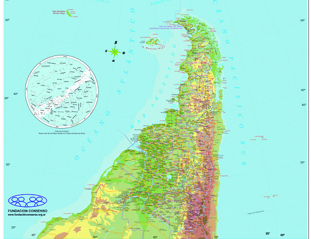

Ignacio Rico & Marcos Mizzi
SE JUEGA LA HISTORIA, MI AMIGO

-Agarrensén, pibes, porque los tiempos que se vienen van a determinar un camino nuevo para la historia... ¡Despiertensén!- nos decía un viejo acodado a la barra de un bar
Por esa época, éramos unos chiquilines desorientado: sabíamos adónde ir pero no tenía idea cómo se llegaba. Por lo que, con la soberbia que nos caracterizaba (con la cual nos habíamos ganado varias amonestaciones en la hora de Catequesis), no le hicimos caso. “Qué sabe este viejo”, pensamos. Diez años después descubrimos que la soberbia es la mesa donde se regodean los ignorantes: el viejo aquel tenía razón.
Como pocas veces en la vida de nuestra nación, vivimos la oportunidad de resolver los problemas estructurales que aquejan a nuestro(s) pueblo(s), como son, la tarea inconclusa de nuestra independencia y el sueño inconcluso de la justicia social de una vez, para siempre y para todos (no se achiquen, dicen por ahí).
Concebido dolorosamente por el matrimonio violento de un español y una india hace 500 años, y tras atravesar de 200 años de idas y venidas donde se enfrentó a sus propios fantasmas, al pueblo argentino ahora le toca decidir qué quiere ser. 1810, 1820, 1835, 1851, 1906, 1930, 1945, 1955, 1973, 1976, 1983, 2001, 2003, 2010: no son un código, son fechas en las que ganamos o perdimos algo: la anhelada libertad que repite tres veces nuestro himno.
La última gran generación que perdió, la de los pibes y pibas masacrados y desaparecidos por la dictadura cívico-militar del ‘76, pudo al menos rescatar gran parte de su legado y ponerlo en práctica. Los patriotas de Mayo y los gauchos federales, masacrados y escondidos por la democracia liberal del siglo XIX, no pudieron hacer lo mismo. Y esa es una ventaja que tenemos, los jóvenes que somos parte del movimiento nacional hoy.
Por primera vez, un gobierno que defiende al pueblo termina su mandato sin entrar en crisis. Y por primera vez, también, podemos continuar con la lucha por la liberación nacional sin empezar todo de nuevo. De nosotros depende que el próximo que se ponga la banda albiceleste continúe por este camino.
Nos tocó vivir el proceso político, retomando la revolución nacional inconclusa, que delineará una nueva Argentina. Si la hacemos bien, mañana vendrán nuestros hijos a colorear esos contornos.